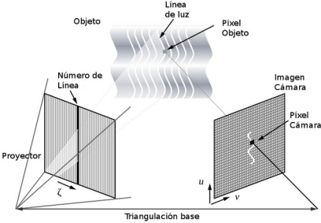
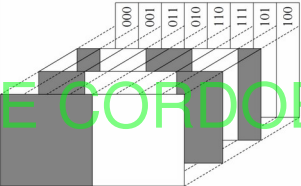
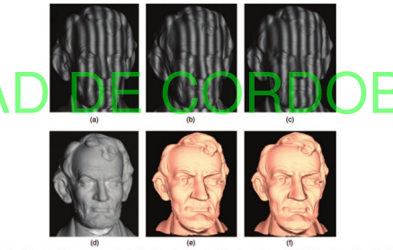
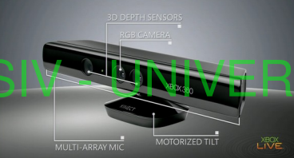
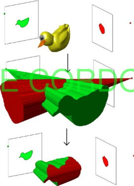
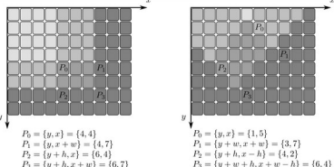
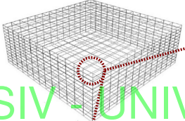
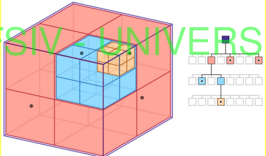

En esta sección abordaremos otros métodos de reconstrucción de la escena 3D.
La reconstrucción 3D mediante luz estructurada es una técnica ampliamente utilizada para obtener mapas de profundidad precisos y detallados de una escena.
A diferencia de la visión estéreo, que utiliza correspondencias entre dos o más imágenes capturadas desde diferentes puntos de vista, esta técnica proyecta patrones conocidos de luz sobre el objeto o la escena y analiza cómo estos patrones se deforman al interactuar con las superficies.

¿Cómo Funciona la Luz Estructurada?
La técnica se basa en proyectar un patrón estructurado (como líneas, rejillas o patrones codificados) sobre el objeto y capturarlo con una o más cámaras. La deformación del patrón proyectado permite calcular la geometría 3D de la superficie.
Proceso Típico:
Proyección del Patrón:
Captura de Imágenes:
Cálculo de la Geometría 3D:
Reconstrucción del Modelo 3D:
| Decimal | Binario | Código Gray |
|---|---|---|
| 0 | 000 | 000 |
| 1 | 001 | 001 |
| 2 | 010 | 011 |
| 3 | 011 | 010 |
| 4 | 100 | 110 |
| 5 | 101 | 111 |
| 6 | 110 | 101 |
| 7 | 111 | 100 |

Ventajas:
Alta Precisión:
Tolerancia a Ruido:
Optimización del Tiempo de Decodificación:
Inconvenientes:
Sensibilidad a Superficies Reflectivas o Transparentes:
Ambigüedades en Escenas Complejas:
Resolución Limitada:
Tiempo de Procesamiento:
El método de luz estructurada con desplazamiento de fase es una técnica avanzada utilizada en la reconstrucción 3D, que se basa en proyectar patrones de franjas de luz sobre un objeto para capturar su forma tridimensional con alta precisión.
Este enfoque es especialmente útil para superficies con texturas complejas o reflectantes, donde otros métodos pueden fallar.

Solamente necesita 3 patrones.
Los patrones se calculan de la siguiente manera:
Proceso de cálculo de la fase:
Fórmula de
Ventajas del método
Inconvenientes:
La Kinect es un dispositivo inicialmente diseñado por Microsoft para videojuegos, pero rápidamente encontró aplicaciones en campos como la reconstrucción 3D debido a su capacidad para capturar imágenes RGB y profundidades de manera simultánea. Este sistema combina tecnologías de luz estructurada e infrarroja, permitiendo obtener información tridimensional del entorno en tiempo real.

¿Cómo funciona la Kinect para reconstrucción 3D?
La Kinect emplea un sistema basado en la emisión y detección de luz infrarroja:
Proyección de un patrón infrarrojo:
Captura del patrón deformado:
Cálculo de profundidad:
Imágenes RGB:
Fusión de datos:
Ventajas de la Kinect en reconstrucción 3D
Limitaciones del sistema Kinect
La reconstrucción 3D a partir de siluetas es una técnica utilizada para crear modelos tridimensionales a partir de múltiples imágenes tomadas desde diferentes ángulos, aprovechando las proyecciones del objeto en cada imagen para determinar su forma aproximada. Esta técnica puede implementarse utilizando métodos como Voxel Set y Octree.
Concepto básico:
Definición de silueta:
Espacio visual:
Volumen visual (Visual Hull):
Suposiciones:

Un voxel (volumetric pixel) es una unidad cúbica que representa una porción del espacio 3D, similar a cómo un píxel representa un punto en 2D.

Método de reconstrucción:
Definición del espacio 3D:
Proyección de los voxeles:
Resultado:

Ventajas:
Inconvenientes:

Método de reconstrucción:
Inicialización del espacio:
Proyección y subdivisión:
Resultado:
Ventajas:
Limitaciones:
| Método | Ventajas | Limitaciones |
|---|---|---|
| Voxel Set | Fácil de implementar; resolución fija | Alto consumo de memoria y cómputo |
| Octree | Eficiencia en memoria; adaptable | Complejidad en implementación |